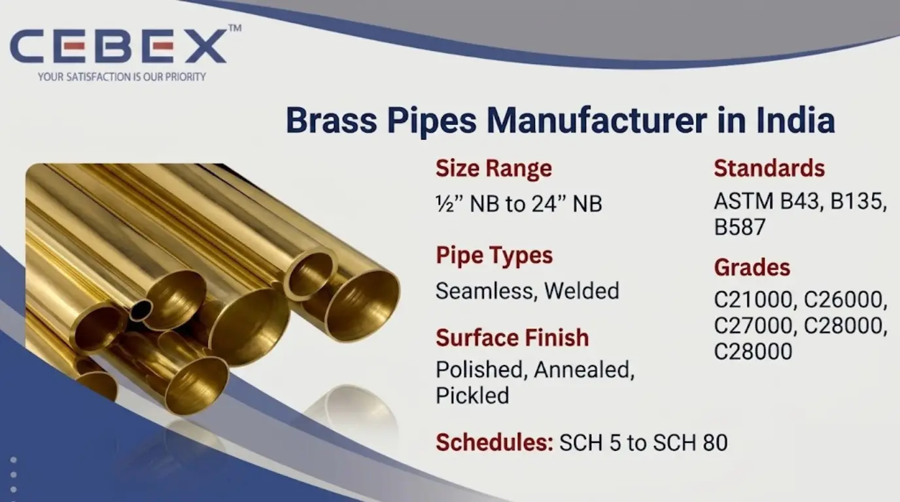

Leading Manufacturer & Exporter of Brass Pipes
Brass pipes play a vital role in modern industrial and commercial infrastructure due to their excellent corrosion resistance, durability, and workability. As a leading Brass Pipe Manufacturer in India, CEBEX STEEL INDIA offers high-quality brass pipes designed to meet the diverse requirements of industrial, plumbing, and architectural applications.
Brass, an alloy of copper and zinc, is widely recognized for its strength, machinability, and resistance to corrosion, making it suitable for both fluid transport and structural applications. Our brass pipes are manufactured using premium raw materials and advanced production techniques to ensure consistent performance, dimensional accuracy, and long service life.
We supply brass pipes in accordance with international standards such as ASTM, ASME, DIN, and EN, ensuring reliability and compatibility for global projects.

Selecting the right Brass Pipe Manufacturer in India is essential for ensuring quality, performance, and compliance. CEBEX STEEL INDIA is known for its strong manufacturing capabilities, technical expertise, and commitment to international standards.
Our brass pipes are produced as per recognized specifications such as ASTM B43, ASTM B135, and ASTM B587, ensuring high-quality output for various industrial applications. Each pipe undergoes strict quality checks including dimensional inspection, chemical analysis, and mechanical testing.
We maintain complete material traceability, supported by batch records and heat numbers. All products are supplied with Mill Test Certificates (EN 10204 3.1) along with inspection reports and compliance documentation.
With strong export capabilities, we ensure secure packaging, timely delivery, and smooth logistics for global shipments across Africa, the Middle East, Europe, and Southeast Asia.
| Feature | Specification / Detail |
|---|---|
| Product Type | Brass Pipes |
| Standards | ASTM B43, B135, B587 |
| Grades | C21000, C26000, C27000, C28000 |
| Types | Seamless, Welded |
| Size Range | –" NB to 24" NB |
| Schedules | SCH 5 to SCH 80 |
| Surface Finish | Polished, Annealed, Pickled |
These Brass Pipes are designed to provide high strength, corrosion resistance, and long service life in various industrial and commercial environments.
Our product range includes seamless Brass Pipes for high-pressure applications, and welded pipes for cost-effective solutions. Seamless pipes offer superior strength due to their uniform grain structure, while welded pipes provide economical options for large-scale industrial projects.
We also supply customized Brass Pipes with specific wall thicknesses, dimensional tolerances, and surface finishes as per project requirements, ensuring full compatibility with engineering and process specifications.
We supply Brass Pipes in a wide range of grades suitable for various applications.
| Grade | Description | Applications |
|---|---|---|
| C21000 | Gilding Metal | Decorative |
| C26000 | Cartridge Brass | Plumbing, condensers |
| C27000 | Yellow Brass | General engineering |
| C28000 | Muntz Metal | Marine, industrial |
| Category | Standards |
|---|---|
| Pipe Standards | ASTM B43, B135, B587 |
| International Standards | DIN, EN, ISO |
| ASME Standards | ASME B36.10 |
The performance and durability of Brass Pipes largely depend on their precise chemical composition and mechanical strength. All Brass Pipes are manufactured using controlled alloying elements to ensure corrosion resistance, strength, and long-term reliability in demanding environments. Each batch is tested and certified to meet ASTM and international standards.
The following table outlines the typical chemical composition of commonly supplied grades of Brass Pipes:
| Grade | Cu (%) | Zn (%) |
|---|---|---|
| C26000 | 68.5–71.5 | Balance |
| C27000 | 63–68.5 | Balance |
| C28000 | 59–63 | Balance |
In addition to chemical composition, the mechanical properties of Brass Pipes determine their suitability for various applications. All our Brass Pipes undergo tensile testing, hardness testing, and elongation verification to ensure compliance with required specifications.
| Property | Value Range |
|---|---|
| Tensile Strength | 300 – 550 MPa |
| Yield Strength | 100 – 300 MPa |
| Elongation | 20 – 40% |
| Hardness | 80 – 150 HB |
All Brass Pipes are supplied with EN 10204 3.1 Mill Test Certificates, ensuring full transparency, traceability, and compliance for domestic and international projects.
We manufacture Brass Pipes from –" NB to 24" NB with multiple wall thickness options.
| Size (NB) | OD (mm) | Thickness (mm) | Weight (kg/m) |
|---|---|---|---|
| –" | 21.3 | 2.77 | 1.27 |
| 1" | 33.4 | 3.38 | 2.68 |
| 2" | 60.3 | 3.91 | 5.44 |
| 4" | 114.3 | 6.02 | 15.32 |
| 8" | 219.1 | 8.18 | 43.39 |
Custom sizes, schedules, and wall thicknesses are available as per project requirements.
Brass Pipes are widely used in industries where corrosion resistance, thermal conductivity, and durability are critical, including plumbing systems, heat exchangers, HVAC applications, marine installations, and industrial fluid handling.
Their ability to handle moderate pressure and temperature variations, along with excellent machinability, makes them suitable for both structural and process piping applications in demanding environments.
All Brass Pipes undergo rigorous inspection procedures to ensure compliance with international standards and project specifications. Testing includes chemical testing, mechanical testing, dimensional inspection, and visual inspection.
Each pipe is supplied with EN 10204 3.1 Mill Test Certificates, ensuring full traceability, material verification, and quality assurance for critical industrial applications.
All Brass Pipes are packed using export-grade materials including wooden cases, bundles, and protective wrapping to prevent transit damage. Each pipe is properly marked with grade, size, standard, and heat number.
We provide complete export documentation including invoices, packing lists, Mill Test Certificates, and certificates of origin, ensuring smooth international shipments and customs clearance.
As a leading Brass Pipe Manufacturer in India, we have built a strong reputation for supplying high-quality Brass Pipes to major projects across Africa. Our export team understands the specific requirements of African industries and ensures smooth, timely deliveries with complete documentation and compliance.
We supply brass pipes across Africa including Nigeria, Egypt, Kenya, South Africa, and Ethiopia with full export compliance and logistics support.
In addition to Brass Pipes, we also manufacture and export Copper Pipes , Aluminium Pipes , Titanium Pipes , and Stainless Steel Pipes . These pipes are engineered for demanding services where corrosion resistance, strength, and temperature performance are critical.
Browse our full range:
CEBEX STEEL INDIA is recognized for reliable quality, strong technical expertise, and global export capability. We deliver consistent material performance, competitive pricing, and dependable supply solutions for industrial piping requirements, making us a trusted partner for domestic and international projects.
Brass Pipes are widely used in plumbing systems, heat exchangers, HVAC, marine applications, and industrial fluid handling due to their corrosion resistance, durability, and thermal conductivity.
C26000 (Cartridge Brass) is most commonly used for plumbing due to its excellent corrosion resistance and formability. For marine or heavy-duty applications, C28000 (Muntz Metal) is preferred.
Our Brass Pipes are manufactured as per ASTM B43, ASTM B135, ASTM B587, along with compliance to DIN, EN, and ISO standards, ensuring suitability for global industrial applications.
Seamless Brass Pipes are stronger and suitable for high-pressure systems. Welded Brass Pipes are more economical and ideal for general-purpose and low-pressure applications.
We manufacture Brass Pipes from –" NB to 24" NB, with multiple thicknesses and schedules. Custom sizes and lengths can also be supplied based on project requirements.